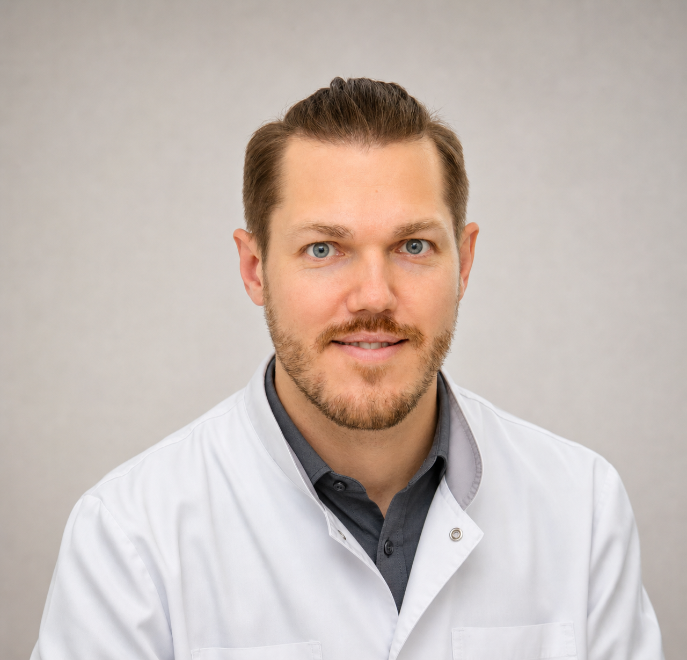

Энергия и стресс
Для тех, кто просыпается уставшим, долго восстанавливается и живёт в постоянной нагрузке.
- стресс-нагрузка
- сон и восстановление
- адаптационные резервы
Для тех, кто хочет понять состояние до серьёзных диагнозов: усталость, стресс, вес, сон, возрастные изменения и “анализы в норме, а сил нет”.
Вы получите понятный снимок состояния и план: что корректировать, что проверить и какие шаги сделать в первую очередь.
Задача взрослого направления — дать ясность по ресурсу организма, стрессу, метаболизму и факторам риска.
Как организм выглядит по ресурсным показателям, а не только по паспорту.
Насколько нервная система справляется с работой, сном и восстановлением.
Мышцы, жир, вода и метаболический возраст без догадок по весам.
Тонус, микроциркуляция и факторы сердечно-сосудистого риска.
Какие состояния могут поддерживать усталость и слабое восстановление.
Что корректировать сейчас, что проверить глубже, а что наблюдать в динамике.
Если “в целом всё нормально”, но энергии меньше, вес растёт и давление скачет, нужен не случайный набор обследований, а системная картина.
Вы спите, но не восстанавливаетесь. Часто это история про дефициты, стресс и сбой адаптации.
Сосуды могут стареть быстрее паспортного возраста, даже если разовые измерения выглядят терпимо.
Вес растёт, привычные диеты не помогают, а организм уже работает по другим правилам.
Врач подбирает технологии по задаче: оценить функциональные системы, сосуды, метаболизм, восстановление и адаптационные резервы.
Интервальная гипокси-гипероксическая тренировка для работы с ресурсом, восстановлением, сердечно-сосудистой и дыхательной системой.
Медицинский CO₂ для локальной работы с микроциркуляцией, спазмом, отёчностью и восстановлением тканей.
Сосудистый тонус, жесткость и эластичность сосудов, эндотелиальная функция, центральное давление и индекс стресса.
Оценка функциональных систем организма, органов и тканей, нервной системы, гормонального баланса, иммунного статуса и резервов адаптации.
Аппарат для ионной детоксикации организма в составе восстановительных программ по показаниям врача.
Состав тела, гидратация, мышечная и жировая масса, метаболические риски и контроль динамики.
После check-up врач переводит показатели в программу: энергия, метаболизм, гормональный баланс, anti-age или профилактика рисков.
Для тех, кто просыпается уставшим, долго восстанавливается и живёт в постоянной нагрузке.
Когда вес растёт, диеты не работают, а нужно понять состав тела, нагрузку на обмен веществ и метаболические риски.
Для женщин и мужчин 35+, когда меняется энергия, сон, вес, настроение и восстановление.
Поддержка ресурса и профилактика возраст-ассоциированных изменений без обещаний “омоложения”.
Это не аппаратный метод и не самостоятельная процедура “на всякий случай”. Состав, дозировки и курс определяются после оценки жалоб, анализов, целей восстановления и противопоказаний.
Нажмите на блок, чтобы понять, при каких задачах метод может быть полезен и как врач использует результат.
Стоимость зависит от выбранного приёма, диагностики и процедур. Перед записью администратор уточнит вашу задачу и заранее сориентирует по цене визита.
Консультация • 60 мин.
Консультация • 60 мин.
Консультация • 60 мин.
Консультация, осмотр • 60 мин.
Расширенный прием • 2 часа.
Осмотр, консультация без манипуляций • 60 мин.
Разбор результатов • 30 мин.
С выдачей заключения о проведении консилиума.
Комплексная оценка возрастных и ресурсных показателей.
Компонентный состав: мышцы, жир, вода.
Аппарат AngioCode • сосудистый тонус и эндотелиальная функция.
Биорезонансное тестирование • 2 часа.
OXYTERRA.
5 сеансов.
10 сеансов.
Аппарат MEDEXIM INCO2.
Аппарат MEDEXIM INCO2.
Аппарат MEDEXIM INCO2.
Аппарат MEDEXIM INCO2.
Аппарат MEDEXIM INCO2.
Аппарат MEDEXIM INCO2.
Одна процедура.
Курс антиоксидантной spa-программы.
Главный врач, кандидат медицинских наук, невролог, психоневролог, эпилептолог. Врач превентивной, интегративной, антивозрастной медицины и функциональной диагностики.

Врач-нефролог, врач-рефлексотерапевт. Врач интегральной превентивной и антивозрастной медицины, специалист метаболомной, митохондриальной и биорезонансной медицины.
Да, если самочувствие не соответствует анализам. Check-up помогает оценить ресурс, стресс, состав тела, сосудистые и метаболические показатели, которые не всегда видны в базовом наборе обследований.
Входной продукт — это оценка состояния и план дальнейших шагов. При необходимости врач предложит дообследование, консультацию профильного специалиста или программу контроля динамики.
Вы получите объяснение показателей человеческим языком: что важно корректировать сейчас, какие риски проверить и как отслеживать изменения.
Да. Но лучше начинать с check-up, чтобы не выбирать программу наугад. После оценки врач поможет определить, что актуальнее: стресс, вес, гормональный баланс, anti-age или профилактика.
Оставьте заявку — администратор уточнит вашу ситуацию, подберёт направление и предложит удобное время приёма.
Имеются противопоказания. Необходима консультация специалиста.